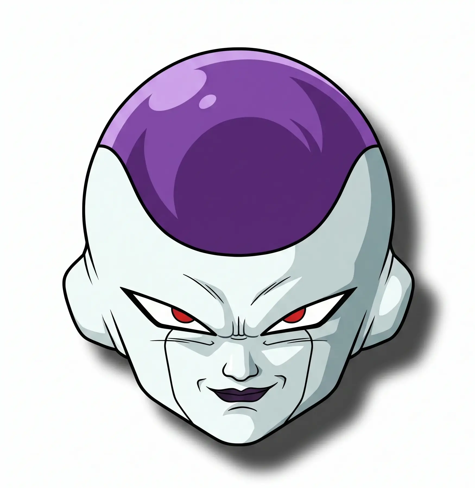

<html lang="en">
  <head>
    <meta charset="UTF-8" />
    <meta name="viewport" content="width=device-width, initial-scale=1.0" />
    <link rel="stylesheet" href="frieza.css" />
    <title>Frieza App</title>
  </head>
  <body>
    <div class="js-container"></div>

    <script src="https://unpkg.com/supersimpledev/react.js"></script>
    <script src="https://unpkg.com/supersimpledev/react-dom.js"></script>

    <script src="https://unpkg.com/supersimpledev/babel.js"></script>

    <script type="text/babel">
      const Frieza = () => {
        const forms = [
          {
            image: "./images/Frieza-1.webp",
            alt: "Artwork of Frieza in his first form.",
            title: "First Form",
            desc: "Frieza's most suppressed state. Small stature with horns and a hover-pod. Used to conserve energy and intimidate. Even in this form, he effortlessly destroyed Planet Vegeta.",
            powerLevel: "530,000",
            id: "1",
          },
          {
            image: "./images/Frieza-2.webp",
            alt: "Artwork of Frieza in his second form.",
            title: "2nd Form",
            desc: "Massive, hulking transformation with elongated horns and towering height. Frieza's first power-up on Namek, used to overwhelm Gohan, Krillin, and later Piccolo after he fused with Nail.",
            powerLevel: "1,400,000",
            id: "2",
          },
          {
            image: "./images/Frieza-3.webp",
            alt: "Artwork of Frieza in his third form.",
            title: "3rd Form",
            desc: "Grotesque, xenomorph-like shape with a distended skull and hunched posture. Brief, unsettling appearance designed purely to intimidate Piccolo before Frieza unveiled his true final form.",
            powerLevel: "2,000,000",
            id: "3",
          },
          {
            image: "./images/Frieza-4.1.webp",
            alt: "Artwork of Frieza in his final form one.",
            title: "Final Form - 1",
            desc: "Frieza's true sleek, minimalist body—smooth, small, and entirely white with purple gems. Shockingly unassuming, this is his natural state and far deadlier than all previous transformations combined.",
            powerLevel: "3,000,000",
            id: "4",
          },
          {
            image: "./images/Frieza-4.2.webp",
            alt: "Artwork of Frieza in his 50% final form.",
            title: "Final Form - 2",
            desc: "Frieza powers up to half his maximum against a newly transformed Super Saiyan Goku. Muscles swell slightly, but he remains controlled, confident he can still win without going all out.",
            powerLevel: "60,000,000",
            id: "5",
          },
          {
            image: "./images/Frieza-4.3.webp",
            alt: "Artwork of Frieza in his 100% final form.",
            title: "Final Form - 3",
            desc: "Maximum output. Frieza bulks up dramatically with swollen, vein-covered muscles. Immensely powerful, but suffers crippling stamina drain that ultimately costs him the fight against Goku.",
            powerLevel: "120,000,000",
            id: "6",
          },
          {
            image: "./images/mecha-freeza.webp",
            alt: "Artwork of Frieza in his mecha form one.",
            title: "Mecha Frieza",
            desc: "Cybernetically rebuilt after Namek, with metallic plating and embedded weapons. Arrogantly travelled to Earth for revenge, only to be effortlessly killed by Future Trunks on arrival.",
            powerLevel: "160,000,000",
            id: "7",
          },
          {
            image: "./images/gold-frieza.webp",
            alt: "Artwork of Frieza in his golden form one.",
            title: "Golden Frieza",
            desc: "Frieza's divine-tier transformation after four months of training. Skin turns brilliant gold with purple gems. Initially stronger than Super Saiyan Blue, but flawed by rapid energy loss—later perfected in Hell.",
            powerLevel: "Immeasurable",
            id: "8",
          },
          {
            image: "./images/black-frieza.webp",
            alt: "Artwork of Frieza in his black one.",
            title: "Black Frieza",
            desc: "Unveiled in the Granolah arc after ten years of Hyperbolic Time Chamber training. Jet-black skin with deep purple accents. One-shot True Ultra Instinct Goku and Ultra Ego Vegeta instantly.",
            powerLevel: "Immeasurable",
            id: "9",
          },
        ];

        return (
          <div className="form-grid">
            {forms.map((form) => (
              <FormCard key={form.id} form={form} />
            ))}
          </div>
        );
      };

      const FormCard = ({ form }) => {
        const [showPower, setShowPower] = React.useState(false);

        return (
          <div className="form-item">
            <div className="form-card">
              
              <h2 className="form-title">{form.title}</h2>
              <p className="form-desc">{form.desc}</p>

              <button className={showPower ? "power-level-display" : "btn"} onClick={() => setShowPower(!showPower)}>
                {showPower ? form.powerLevel : "Power Level"}
              </button>
            </div>
          </div>
        );
      };

      const App = () => {
        return (
          <div className="container">
            
            <h1>Emperor of the Universe</h1>
            <Frieza />
          </div>
        );
      };

      const container = document.querySelector(".js-container");
      ReactDOM.createRoot(container).render(<App />);
    </script>
  </body>
</html>
